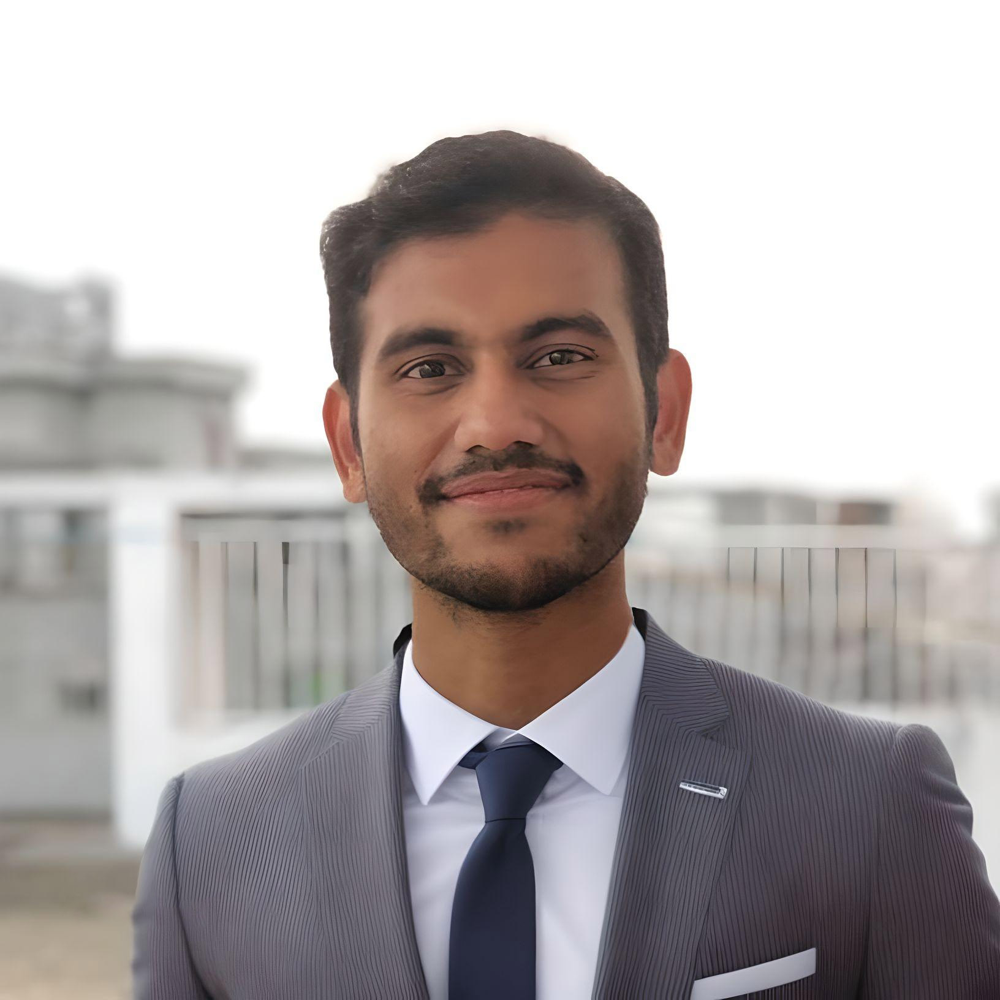

Profile Summary

M Rifat Hossain
EEE Graduate (B.Sc. Engg) and
Former Undergraduate Research Assistant
Machine Lab
Shahjalal University of Science and Technology
Sylhet, Bangladesh
Email: m.rifathosn@gmail.com
EEE Graduate (B.Sc. Engg) and
Former Undergraduate Research Assistant
Machine Lab
Shahjalal University of Science and Technology
Sylhet, Bangladesh
Email: m.rifathosn@gmail.com
A graduate in Electrical and Electronic Engineering (EEE) at Shahjalal University of Science and Technology. Currently working on optical alloys, and IC encryption. Received Bachelor's degree in EEE with 1 year research experience in Inductive Power Transfer, EV, and Power Converters.
Education
- Shahjalal University of Science and Technology, Sylhet, Bangladesh
B.Sc (Engg), Electrical and Electronic Engineering, April 2024 - Dhaka Imperial College, Dhaka, Bangladesh
Higher Secondary Certificate, 2018 - Ideal School and College, Dhaka, Bangladesh
Secondary School Certificate, 2016
Experience
- Industrial Trainee (Dec 2024) at ULKASEMI Pvt. Limited, where I gained hands-on experience in Analog Design, IC Mask Design, and IC Physical Design.
- Undergraduate Research Assistant (Mar 2022 - Nov 2023) Worked as a research assistant at Shahjalal University of Science and Technology, Sylhet. The main goal of the research was to find adequate solution to wireless power transfer to charge up electric vehicles.
- Industrial Trainee (Sep 2023) at Training Institute for Chemical Industries (TICI), Narshingdi. The training center offered us hands-on experience on industrial equipments which are used for power generation and distribution as well as gained many skills on Instrumentation and Control Engineering. Achieved the highest grade, A+, in the final evaluation.
Awards/Achievements
- Certificate of Appreciation: for fulfilling all the requirements to complete the industrial training from ULKASEMI Pvt. Limited - Dec 2024
- Certificate of Excellence: for holding the esteemed position of General Secretary, EEE Society, SUST - 2023
- Secured CGPA 4.00 (A+) in industrial training at Training Institute for Chemical Industries (TICI), Narshingdi - Sep 2023
- Certificate of Appreciation: for serving as the Vice Precedent of Shahjalal University Speakers Club (SUSC) - (Mar 2022 - Nov 2023)
- Silver Medalist in National Olympiad in Software Innovation (NOSI) - 2014
Other Links
- LinkedIn: linkedin.com/in/r-hossain
- Github: github.com/rifat-hossain/
- ResearchGate: @M-Rifat-Hossain
By continuing, you agree to this website's privacy policy.